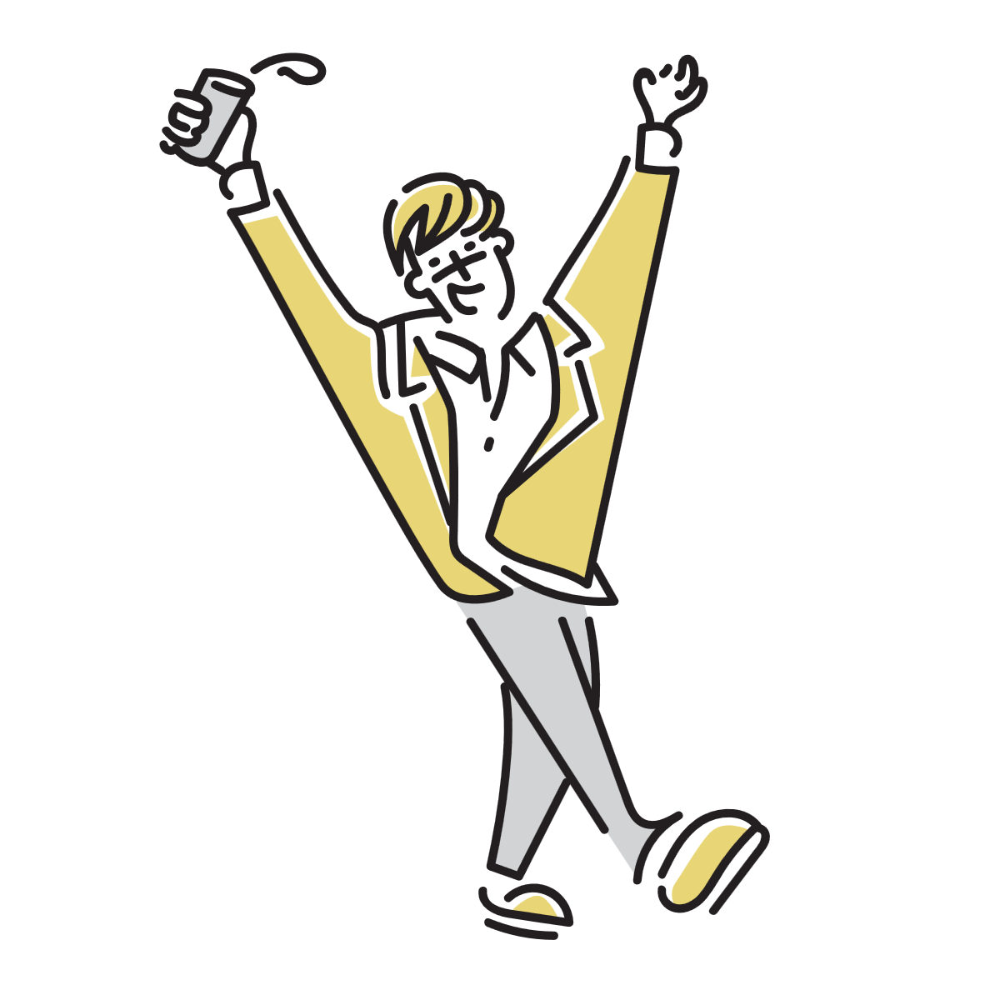
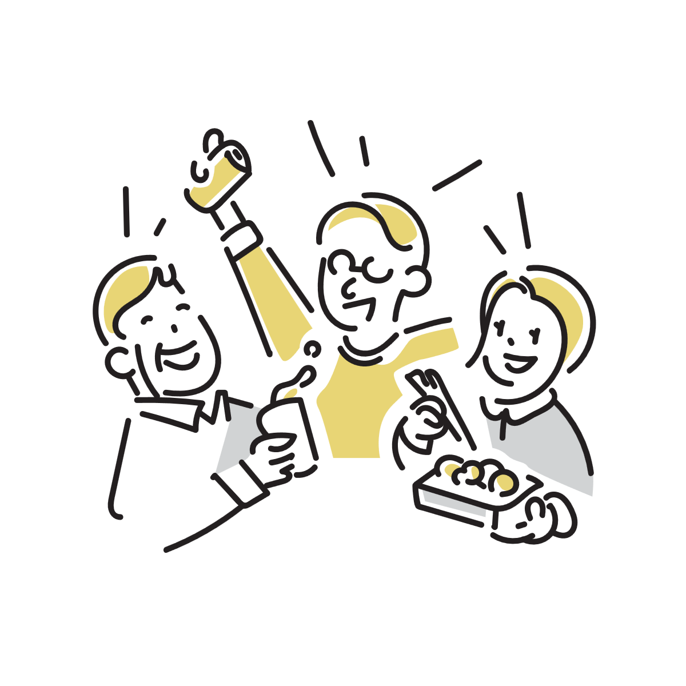
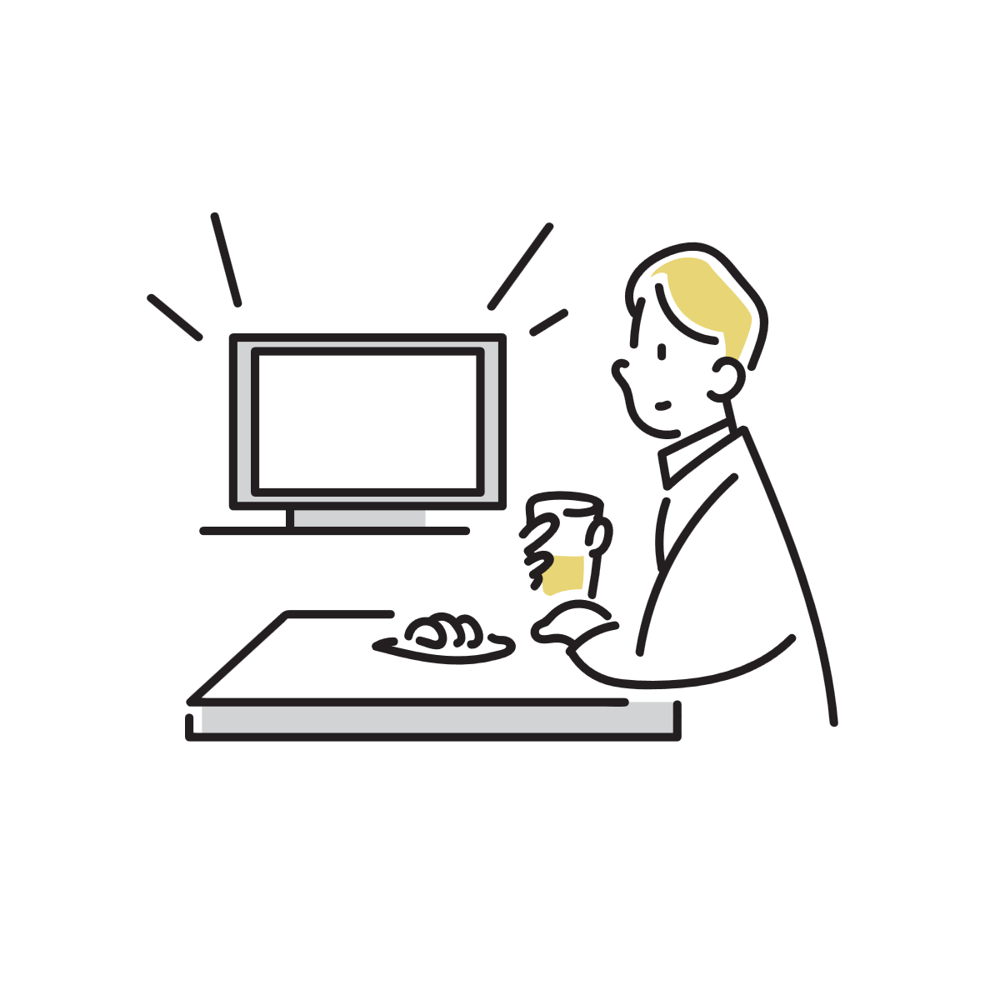

お酒で二日酔いになる人とならない人は何が違う？
楽しいお酒の席の翌朝、頭痛や吐き気に悩まされる人がいる一方で、どれほど飲んでも翌日はすっきりと目覚める人がいます。
「自分は二日酔いになりやすい体質なのだろうか」と不思議に思ったことがある人は少なくありません。
「若い頃は平気だったのに、最近になり急に翌日へ残るようになった」という変化に戸惑う声もよく耳にします。
実は、この違いは単なる「お酒の強い・弱い」だけで決まるわけではありません。
体内でアルコールを処理する仕組みや、飲むときの環境、個人の体調などが複雑に絡み合っています。
ここでは、二日酔いになる人とならない人の違いに着目し、その背景にあるメカニズムや、お酒と上手に向き合うためのヒントを解説します。

二日酔いになるかどうかはお酒の量だけで決まるわけではない
同じように飲み会でグラスを重ねた仲間同士であっても、翌朝のコンディションには大きな差が生まれることがあります。
一方は、起き上がれないほどの倦怠感や頭の重さに苦しみ、水分を摂ることもままならない状態になります。
もう一方は、前夜の楽しさを心地よく残したまま、いつも通りに朝食を楽しみ、軽快に行動を始められます。
この違いは、単に「お酒の量が多すぎたかどうか」だけではなく、体内での代謝プロセスや、飲む量やペース、その日の体調などが異なることで生まれます。
肝臓のアルコール分解能力は個人差がある
二日酔いのなりやすさには、肝臓におけるアルコールの分解能力や、分解過程に個人差があることが関係しています。
体内に取り込まれたアルコールは、肝臓でまず「アセトアルデヒド」という物質に変化し、その後さらに酢酸へと分解されます。
アセトアルデヒドは毒性があり、飲酒後の体の反応に関係している物質で、二日酔いの要因のひとつと考えられています。
分解酵素の働きが遺伝的に活発な人は、アセトアルデヒドが素早く無毒化されるため、体内に毒素がとどまる時間が短くなる傾向にあります。
一方で、分解に時間がかかるタイプや、処理できる量を超えてアルコールを摂取してしまった場合は、アルコールやその代謝に伴う物質が体内に長く残り、翌日まで不快な症状を持ち越すことがあります。
また、年齢を重ねるにつれて、以前と同じ量を飲んでも翌日に残るようになったと感じることがあります。
- お酒を飲むとすぐに顔が赤くなりやすい、または動悸がする。
- 若い頃に比べて、同じ量を飲んでも翌朝に残りやすくなったと感じる。
- 自分の限界の量を超えて飲んでしまうことが多い。
自分の分解能力を超えない量を意識し、無理のないペースで楽しむことが大切です。
体調が優れないときは、いつもより控える勇気を持ちましょう。
また、若い頃の感覚で飲むと当時よりも酔いが残りやすくなっていることがあります。

お酒の飲み方やそのときの状態も二日酔いに関係する
体質的な要素だけでなく、お酒を飲んでいる最中の状況や飲み方も、翌朝の明暗を分ける要因になります。
お酒を飲むと、アルコールの作用によって尿量が増え、体から水分が失われます。
ただし、飲酒による脱水と二日酔いは、同じものとして考えることはできません。
水分が失われること自体は飲酒後に起こりますが、水を多く飲めば二日酔いの症状を軽くできるとは限らないことが、近年の研究で示されています。
一方で、空腹のまま一気に飲み干すようなペース配分をしていると、アルコールの吸収が速くなり、血中アルコール濃度が上がりやすくなります。
- お酒を飲む際に、水やソフトドリンクなどをほとんど飲まない。
- 空腹のままアルコールを勢いよく飲んでしまうことが多い。
- 気づかないうちに普段以上のペースでグラスを重ねている。
食事をしてから飲むことは、空腹時に飲むのに比べてアルコール吸収の速度が緩やかになる場合があります。
また、飲むペースを落とすことで一定の時間内に飲む総量が抑えられれば、 結果として二日酔いを軽減できる可能性があります。
自然な変化として受け止める心身のサイン
二日酔いになりやすいからといって、それが一概に「体が劣っている」ということではありません。
お酒に対する体の反応は、その日の疲労度や睡眠不足、ストレス状態などによっても日々変化します。
「今日はいつもより体に負担がかかるな」と感じる日は、アルコールの分解スピードも普段より落ちやすくなります。
自分の体質やその日のコンディションを正しく知り、無理のないペースで飲むことや、胃に何か入れてから飲むことを意識することが、心地よい時間を長く楽しむためのコツといえます。

⚠受診を考えた方がよいケース
お酒を飲んだ翌日に体調がすぐれないこと自体は珍しくありませんが、すべての不調を単なる二日酔いとして片付けることはできません。
適量のお酒しか飲んでいないにもかかわらず激しい頭痛や嘔吐が続く場合や、以前と比べて明らかに症状が重くなっている場合は、別の体調不良が隠れている可能性もあります。
また、強いめまいや胸の痛み、しびれなどを伴う場合は、無理をせず医療機関への相談を検討してください。
関連商品
 | 価格:1000円 |
この商品に含まれている酢酸菌酵素は、臨床試験においてお酒の席のコンディション維持をサポートする機能が確認されています。
参考情報と注意点
アルコールが体に与える影響には大きな個人差があります。不安がある場合は、無理をせず専門医に相談してください。
二日酔いにはさまざまな要因が関係していると考えられています。 この記事では、その中でもアルコールの分解能力や飲み方、そのときの体調など、比較的身近な要因に絞って紹介しています。 今後、より詳しい知見が得られれば、内容を改めて整理する予定です。